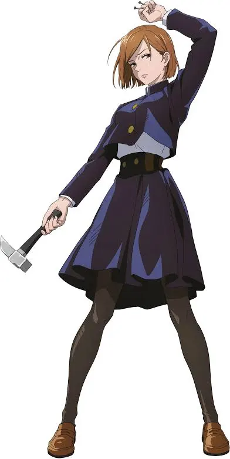

.jpg)
Навігація
ХарактеристикиNobara Kugisaki (釘くぎ崎さき野の薔ば薇ら Kugisaki Nobara?) is the tritagonist of the Jujutsu Kaisen series. She is a first-year student and grade 3 jujutsu sorcerer at Tokyo Jujutsu High studying under Satoru Gojo alongside Yuji Itadori and Megumi Fushiguro. Nobara is slim fair-skinned young woman with neck-length light brown hair that reaches to her neck that is styled with bangs that cover the right side of her forehead in an assymetrical bob-cut. She has orange eyes, long eyelashes and thin eyebrows of the same color. After sustaining a near-fatal injury from Mahito, she now has an eyepatch covering her left eye.[4] Nobara's Jujutsu High uniform consists of a dark blue gakuran-style top (a button-down jacket) and a long matching skirt that reaches to just above her knees. She also sports black pantyhose and brown shoes along with her signature brown belt that holds her tools for jujutsu. As someone who enjoys dressing up, Nobara has several different outfits. She didn't have a tracksuit prior to enrolling at Jujutsu High and bought one shortly after. It included a white and blue hoodie accented with a flower pattern, black tights, and white shoes.[5] Nobara is a confident and brash young woman with an unshakable character. More than anything, she is determined to stay true to herself no matter what.[6] She takes great pride in being both photogenic and a strong fighter, refusing to let anyone change her core.[7] Initially, Nobara can appear to be a very obnoxious and arrogant person. She first introduced herself to Yuji and Megumi by expressing how inferior they were and argued with Yuji for the greater part of their first mission together.[8] Despite her abrasive attitude, Nobara is actually an incredibly caring and dutiful person, but would never let most people see that side of her. After fighting alongside each other on several missions, Yuji and Megumi grew to become Nobara's closest allies. She and Yuji are the two class clowns among the first years who typically annoy Megumi for a laugh any chance they get. Although she likes to pretend that she doesn't like the boys, Nobara was upset after Yuji's death following the Detention Center incident, even shedding a tear upon his revival and demanding an apology from him.[9]
| Ім'я Головного персонаж | Nobara Kugisaki |
| Раса | Человик |
| Возрасть | 16 лет |
